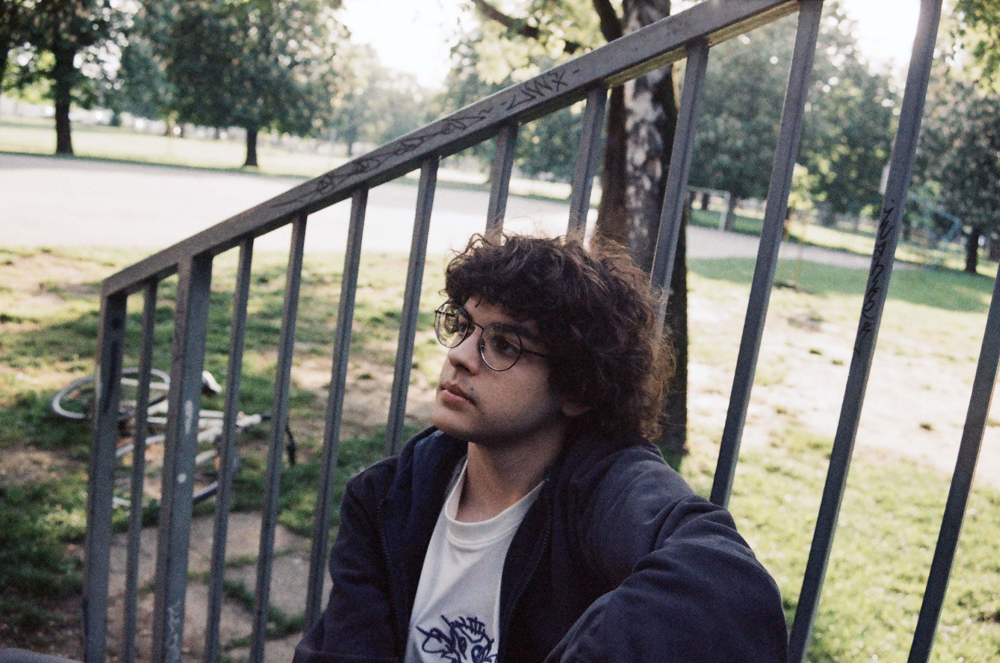
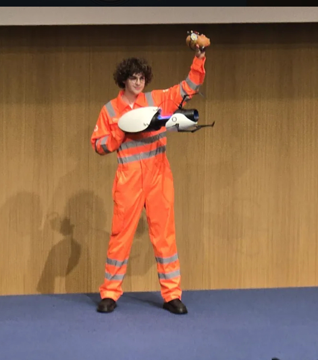
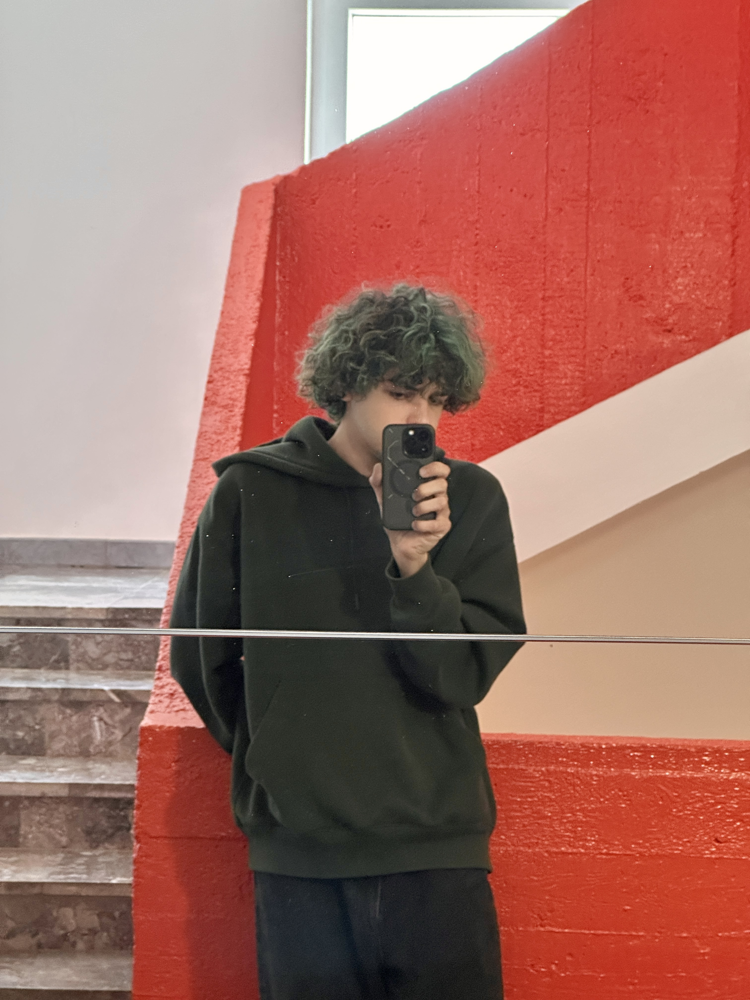

Multimedija o meni!
Malo mojih slika i nešto o njima:



Ovdje imamo neke moje slike. Evo opisi:
- Prva slika je slika koju je prijateljica uslikala sa mojim analognim fotoaparatom Canon T70
- U drugoj slici sam ja u svom Chell cosplayu na SFeraKonu
- U trećoj slici sam prvi put kosu obojao u zeleno!
Ovo je jedna od pjesama koje su mi jako drage:
Također, evo jedan video edit mene kako igram minigolf!
Ovaj audio često koristim za video editanje: